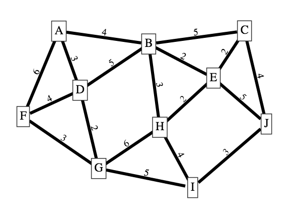

Edgy is a block-based programming environment that runs in a web browser. Use it to write programs that manipulate networks. Edgy is based on Snap! from UC Berkeley. It uses the JSNetworkX graph library.
Here is an example of minimal spanning tree, adapted from Tim Bell's CS Unplugged Muddy City activity.
|
 |